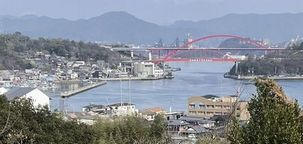
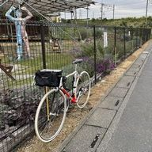
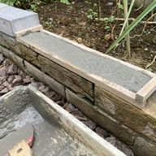

プロフィール
- 生年月日

- 出身地
- 
- 仕事
-
- 前職：コンピュータを利用して何かに役立つモノを作る
- 現在：フリー（晴耕雨読∵無職）
※ お手伝いできることあればご連絡ください
- 資格
-
- 第1種情報処理技術者（歳がばれる）
- 色彩コーディネーター資格3級
- 中国語検定3級
- フォークリフト運転技能講習
※ いずれも趣味的に取得したため統一感が無い
- 自慢
-
- 計算機の1ビット（磁気コアメモリ）を見たことがある、しかもF77プログラムを作ってその計算機を動かした
- J1ビザで渡米し大学助手としてアルバイトしたことがある、しかも確定申告時に連邦政府と州政府の税務窓口で言葉が通じずたらい回しにされた
- 楽しみ
-
- 行ったことのない場所に行って景色を見る、最近は近場が多い
dummy - 自転車で温泉に行って汗だくで帰り、シャワーを浴びてビールを飲む
dummy - 何かを作ったり描いたり撮ったり
dummy
- 行ったことのない場所に行って景色を見る、最近は近場が多い